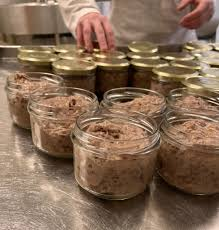

Transformation
du foie grasL'art artisanal des conserveries gersoises


⟹ Savoir-faire & Traditions ⟸
Dans le Gers, la transformation du foie gras s'est développée en même temps que le gavage, dès lors qu'il a fallu conserver un produit fragile au-delà de la saison hivernale. Les premières conserveries familiales apparaissent au tournant du XXe siècle, prolongeant un savoir-faire domestique où chaque ferme mettait déjà en bocal une partie de sa production pour l'hiver.

Le geste fondateur reste le même depuis des générations : le déveinage à la main, l'assaisonnement au sel, au poivre et parfois à l'Armagnac, puis la cuisson lente au bain-marie qui permet au foie de conserver son fondant. Les artisans gersois perpétuent des recettes transmises de mère en fille, où chaque conserverie garde jalousement ses proportions et ses tours de main.
Aujourd'hui, le Gers compte de nombreux ateliers artisanaux et quelques maisons plus importantes, certaines centenaires, qui perpétuent cette tradition entre foie gras entier, mi-cuit, bloc et terrine, expédiés dans toute la France et au-delà.
Les conserveries artisanales du Gers s'installent souvent à même les fermes, au milieu des paysages vallonnés de la Gascogne. Ce lien direct entre élevage et transformation permet de préserver la fraîcheur du produit et de limiter les transports, dans un circuit court caractéristique de l'agriculture paysanne locale.
La proximité entre le lieu d'élevage et l'atelier de transformation reste la signature des conserveries familiales gersoises, garante d'une fraîcheur et d'une traçabilité incomparables.
— Observations sur les circuits courts en GascogneLa saisonnalité reste un enjeu de la filière : la production s'intensifie à l'approche de l'hiver, période où les foies gras sont traditionnellement transformés et mis en conserve pour les fêtes de fin d'année.
Gimont berceau historique de plusieurs conserveries renommées, avec son marché au gras hebdomadaire.
Samatan haut lieu du commerce de foie gras transformé, avec boutiques et ateliers ouverts au public.
Auch capitale gersoise, où l'on trouve de nombreuses épiceries fines proposant les productions locales.
Condom ville de l'Armagnac, dont l'eau-de-vie accompagne souvent l'assaisonnement du foie gras gersois.